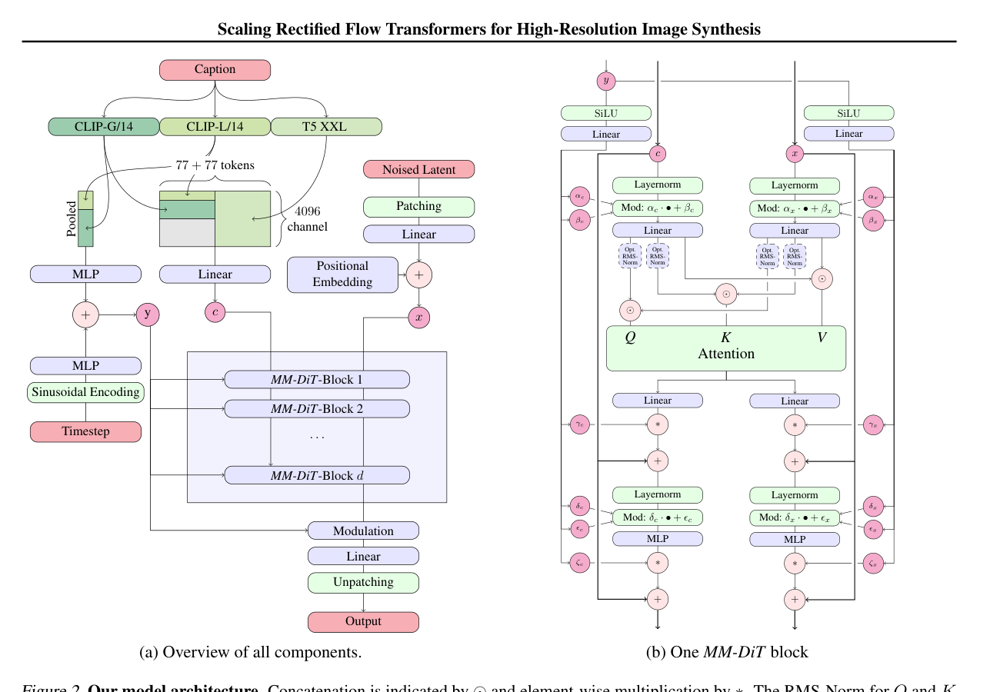

本文解释 DiT（Scalable Diffusion Models with Transformers，Peebles & Xie, ICCV 2023）的核心架构：如何用 Transformer 替代 U-Net 做扩散模型的去噪骨干。
传统扩散模型（如 Stable Diffusion 1.x/2.x）使用 U-Net 作为去噪器。U-Net 的瓶颈：
DiT 提出的答案：把 latent 切成 patches，用标准 Transformer（ViT 风格）处理。这带来了：

将 (B, C, H, W) 切割为 N = (H/p) × (W/p) 个 patch，每个 patch 展平为 p×p×C 维。
| 参数 | 示例 | 结果 |
|---|---|---|
| latent=(1,4,32,32), p=2 | 16×16=256 patches | (1, 256, 16) |
| latent=(1,4,64,64), p=2 | 32×32=1024 patches | (1, 1024, 16) |
| latent=(1,16,32,32), p=2 | 16×16=256 patches | (1, 256, 64) |
DiT 使用 2D sinusoidal position embedding：每个 patch 的 (row, col) 映射为正弦/余弦编码并相加。这与 NLP 的 1D position encoding 不同，因为图像有二维空间结构。
toy 简化：我们的 TinyDiT 使用可学习的 nn.Parameter 替代。
timestep t → sinusoidal encoding → SiLU MLP → 调制参数 (shift, scale, gate)。
这些参数被注入到 每个 DiT block 的两次 LayerNorm 之前：
modulated = LayerNorm(x) * (1 + scale) + shiftgate 用于控制残差连接的强度：
x = x + gate * attention_output
x = x + gate * ffn_output每个 Block 包含：
Attention 是 non-causal full self-attention：所有 patches 互相 attend，无因果掩码。
最终 Linear 层将 (B, N, hidden) → (B, N, p²C)，再通过 reshape/transpose 重组为 (B, C, H, W)。
输出可以是 ε_θ（预测噪声）或 v_θ（预测速度/矢量场），取决于训练目标。
| 阶段 | 输入 Shape | 输出 Shape |
|---|---|---|
| Patchify | (B, C, H, W) | (B, N, p²C) |
| Input Proj | (B, N, p²C) | (B, N, D) |
| + Pos Embed | (B, N, D) | (B, N, D) |
| Timestep Emb | (B,) | (B, D) |
| Text Proj | (B, L, D_text) | (B, L, D) |
| DiTBlock × depth | (B, N, D) + (B, D) + (B, L, D)? | (B, N, D) |
| Output Head | (B, N, D) | (B, N, p²C) |
| Unpatchify | (B, N, p²C) | (B, C, H, W) |
| 维度 | U-Net (SD1.x/2.x) | DiT (SD3/FLUX) |
|---|---|---|
| 骨干 | 卷积 + 下采样/上采样 | Transformer blocks |
| 分辨率处理 | 多尺度特征图 | 固定分辨率 token 序列 |
| 文本注入 | Cross-attention（仅特定分辨率层） | 所有层均可访问 text tokens |
| 位置编码 | 卷积隐式编码 | 显式 2D sinusoidal |
| Scaling | 参数×10 → 显存×20+ | 参数×10 → 可预测提升 |
| 多模态 | 图像专用 | 可扩展至视频（spacetime patch） |
真实 DiT 论文中的 AdaLN-Zero 包括一个关键初始化技巧：
x = x + 0 = x| 维度 | LLM (如 GPT) | DiT |
|---|---|---|
| 注意范围 | 因果（causal，只看向前） | 全连接（所有 patches 互相看） |
| KV Cache | 必须（自回归生成需要） | 不需要（每步 latent 全刷新） |
| 位置编码 | 1D RoPE | 2D sinusoidal / learnable |
| 归一化 | RMSNorm（静态） | AdaLN（动态，依赖 timestep） |
| 文本交互 | 无（纯文本模型） | 有（text tokens 参与 attention） |
图像 DiT 的 patchify 只在 (H, W) 二维上切分。视频 DiT 将这一思想扩展到三维——spacetime patch 在 (T, H, W) 三个维度上同时切分视频 latent。
给定视频 latent (B, C, T_latent, H_latent, W_latent) 和 patch 参数 (t_p, h_p, w_p)：
N_spacetime = (T_latent / t_p) × (H_latent / h_p) × (W_latent / w_p)
每个 patch 展平为：t_p × h_p × w_p × C 维| 视频规格 | VAE 压缩后 Latent | Patch (1,2,2) | Spacetime Tokens | Full Attn 矩阵 |
|---|---|---|---|---|
| Sora 推测：16f×256² | (C, 4, 32, 32) | 4×16×16 | = 1,024 | ~2 MB |
| CogVideoX：49f×720×480 | (4, 13, 90, 60) | 13×45×30 | = 17,550 | ~616 MB |
| Wan2.1-1.3B：81f×480×832 | (16, 21, 60, 104) | 21×30×52 | = 32,760 | ~2.1 GB |
| LTX-Video (32×VAE)：121f×720×480 | (4, 15, 22, 15) | 15×11×8 | = 1,320 | ~3.5 MB |
关键洞察：LTX-Video 的激进 VAE 压缩（32×空间而非 8×）将 token 数从 40,500+ 降到 1,320——减少了 30×。这意味着 attention 成本降低了近 1000×。在 12GB VRAM 约束下，减少 token 数比优化 attention 算法更直接有效。
视频 DiT 的位置编码从 2D 扩展到 3D：每个 spacetime patch 的 (t, y, x) 坐标分别编码后相加或拼接。Wan2.1 和 CogVideoX 在 patchify 阶段注入 3D positional encoding，确保模型知道每个 token 在视频时空中的时空位置。
DiT 将 image latent 切割为 patch tokens，用标准 Transformer blocks（带 timestep 调制的 AdaLN）替代 U-Net。核心贡献是证明了 Transformer 可以在扩散模型中替代卷积架构，且具有良好的 scaling 特性。与 LLM 的关键不同在于：attention 是 non-causal 全连接，无 KV cache，归一化由 timestep 动态控制。
diffusion_engine/core/dit.py 中的 TinyDiT 是 DiT 的 toy 实现。它包含 patchify/unpatchify、sinusoidal timestep embedding（torch 版）、AdaLN 调制的 DiTBlock、以及可选的 text conditioning。这是一个简化的验证性实现，用于测试 shape 系统和 pipeline 集成，不用于真实图像生成。真实 DiT（如 SD3/FLUX 所用的版本）参数规模可达 2B~12B，特征维度 1536~3072。